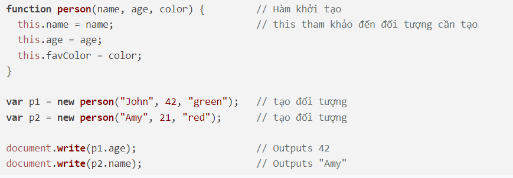
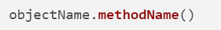
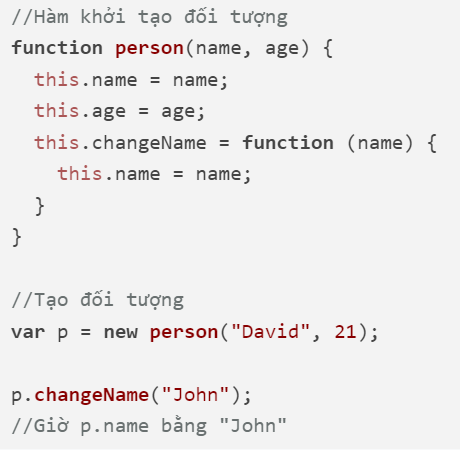
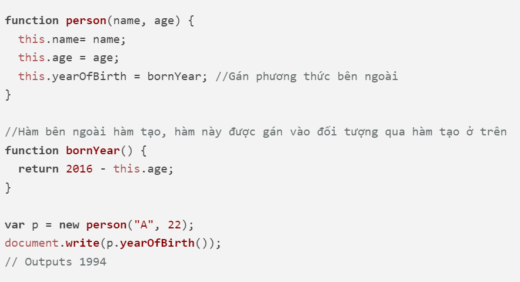
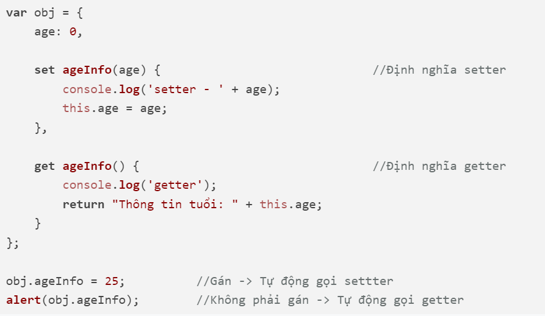
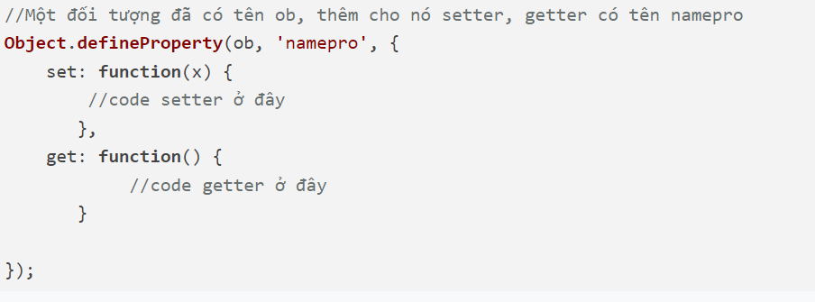
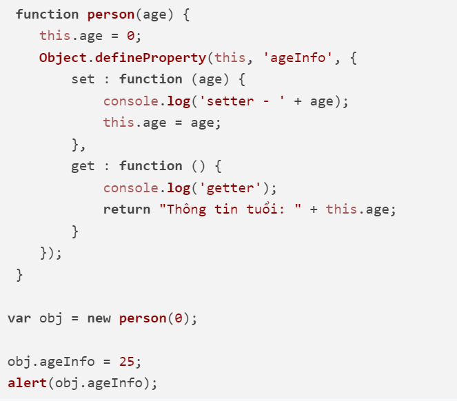

Khác với các kiểu dữ liệu đơn giản - kiểu dữ liệu nguyên thủy (number, string, boolean) chỉ chứa một giá trị đơn giản. Object là 1 kiểu dữ liệu phức tạp - reference type có thể chứa nhiều kiểu dữ liệu khác nhau thông qua cặp key, value. Value có thể là kiểu dữ liệu bất kỳ: number, string, boolean, array, function, object…
Với cách thứ 2 này bạn khai báo một hàm gọi là hàm tạo rồi tạo ra đối tượng bằng cú pháp new hamtao()
Trong hàm tạo hoặc các hàm thuộc đối tượng, sử dụng từ khóa this để tham khảo đến đối tượng, thông qua nó truy cập các thuộc tính
Một đối tượng ngoài các thuộc tính ra nó còn chứa hàm gọi là phương thức, ví dụ truy cập một hàm
Phương thức thuộc về một đối tượng, đối tượng này được hàm tham khảo qua từ khóa this
Các phương thức bạn cũng có thể định nghĩa bên ngoài hàm khởi tạo, ví dụ
Một thuộc tính của của đối tượng còn thiết lập nó là hàm setter hoặc getter, nếu là setter nó chỉ được gọi qua toán tử gán giá trị cho nó, nếu là getter thì chỉ được gọi khi truy cập lấy giá trị thuộc tính.
Hàm setter định nghĩa bằng cách cho thêm set, hàm getter định nghĩa bằng cách cho thêm get
Trong trường hợp muốn định nghĩa setter / getter trong hàm tạo đối tượng thì bạn cần định nghĩa theo nguyên tắc thêm một thuộc tính vào đối tượng đã có với lệnh Object.defineProperty
Ví dụ trên định nghĩa lại trong hàm tạo:
